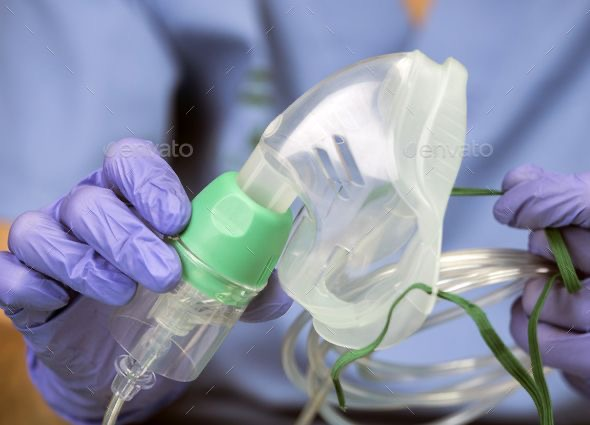
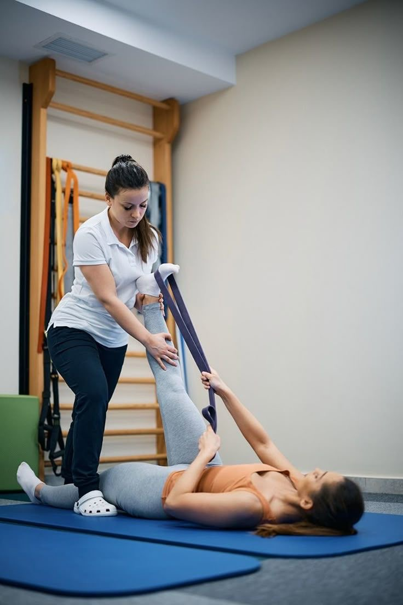
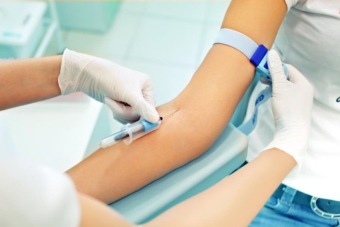

Servicios Médicos a Domicilio en Bogotá
Consulta médica, terapias, laboratorio y ecografías con atención profesional 24/7.

Medicina General a Domicilio en Bogotá y Medellín
Consulta médica completa, diagnóstico y prescripción en casa. Ideal para adultos, niños y personas mayores.

Terapia Respiratoria a Domicilio
Nebulizaciones, higiene bronquial y oxigenoterapia realizadas por terapeutas expertos en casa.

Terapia Física y Rehabilitación
Ejercicios personalizados y manejo del dolor guiado por fisioterapeutas certificados directamente en tu hogar.
Ecografía a Domicilio
Ecografías abdominales, obstétricas y musculoesqueléticas con equipos portátiles de alta resolución.

Laboratorio Clínico a Domicilio
Pruebas de sangre, orina y perfiles especializados. Toma de muestras a domicilio con resultados rápidos y seguros.
Videoconsulta Médica 24 Horas
Consulta médica online inmediata: valoración, incapacidades y tratamiento desde tu celular o computador.